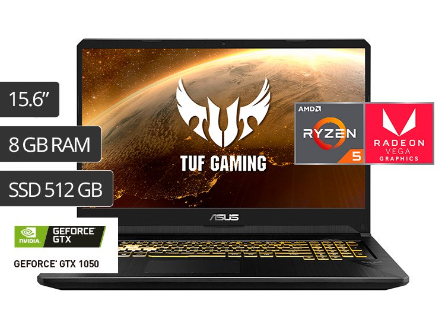
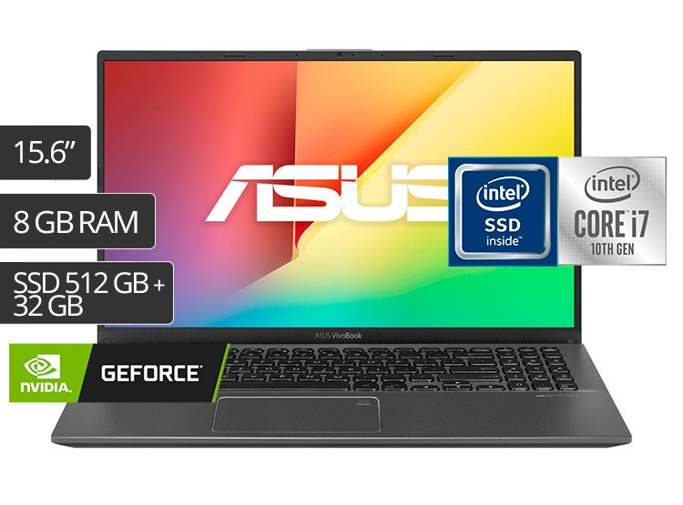
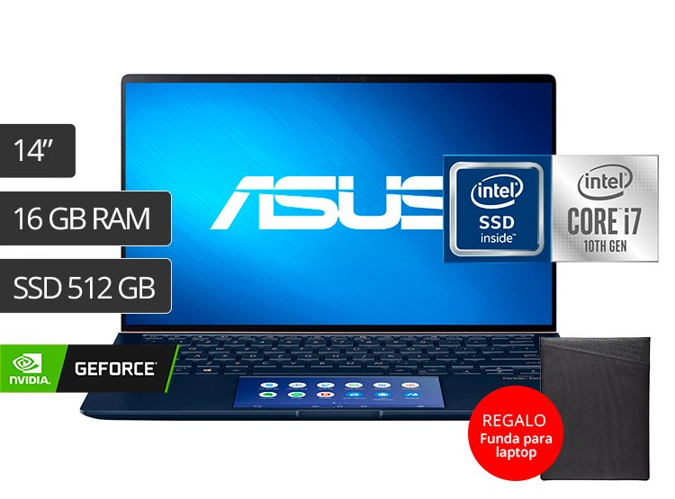

ULTIMAS NOVEDADES
Descubre todo sobre las ultimas novedades del mundo tecnológico a los mejores precios solo aqui en D.A.F.E TECHNOLOGY.
LAPTOP GAMER ASUS TUF FX505DD 15.6" RYZEN 5 512GB SSD 8GB GTX1050 3GB 120Hz
La laptop de alto rendimiento que estabas buscando. El modelo FX505DD-AL186T de Asus cuenta con un procesador AMD Ryzen 5, 8GB de RAM y una tarjeta de video de 3GB
S/2,999
ASUS LAPTOP X512JP-EJ076T 15.6" INTEL CORE I7 512GB+32GB OPTANE 8GB 2GB VIDEO
La laptop de alto rendimiento que estabas buscando. El modelo X512JP-EJ076T de Asus cuenta con un procesador Intel Core i7, 8GB de RAM y una tarjeta gráfica NVIDIA® GeForce® MX 330
S/2,999
LAPTOP ASUS ZENBOOK UX434FLC 14" CORE I7 512GB SSD 16GB VIDEO MX250 2GB
La laptop de alto rendimiento que estabas buscando. El modelo UX434FLC-A5179T de Asus cuenta con un procesador Intel Core i7, 16GB de RAM y una tarjeta de video de 2 GB
S/3,999
LAPTOP GAMER ASUS TUF FX505DV 15.6" RYZEN 7 1TB+256GB SSD 16GB RTX2060 6GB 120Hz
Creada para gamers. La FX505DV de Asus ostenta un poderoso procesador AMD Ryzen 7-3750H, una tarjeta NVIDIA® GeForce RTX2060 y 16GB de RAM